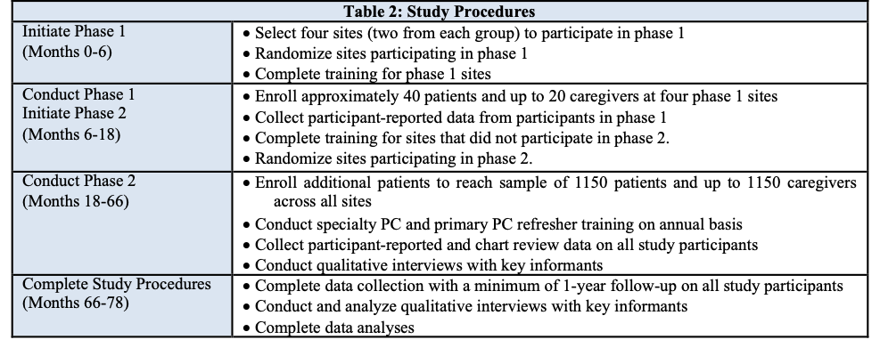
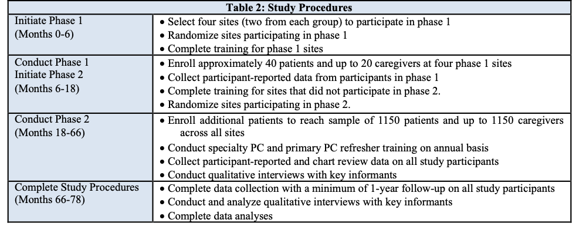

Code
knitr::include_graphics("figures/F28_table2_procedure.png",
dpi = 10)
Patients and their caregivers will remain on study until the patient’s death or up to 5 years after enrollment. The funding agency requires that we conduct this study in two phases, designated phase 1 and phase 2. Phase 1 will be conducted during the first 18 months and phase 2 will be conducted during the final five years of the 78-month study period.
During phase 1, we will complete study training, institute the study protocol, and enroll approximately 40 patients and 20 caregivers at four of the 20 participating sites. The four sites participating in phase 1 will be randomized in 1:1 fashion to specialty PC versus primary PC without any stratification. At the end of the 18-month study period, we will conduct study training and institute the study protocol at the other 16 sites. During phase 2, the 16 sites will be randomized to specialty PC versus primary PC stratified by percent minority population to ensure a balanced proportion of minority participants across the arms. During the remainder of the study period, we will enroll additional patients to achieve our study enrollment goal of 1150 patients. Table 2 (tab-table2?) depicts the study timeline and procedures:
knitr::include_graphics("figures/F28_table2_procedure.png",
dpi = 10)
| Table 2: Study Procedures | |
|---|---|
| Initiate Phase 1 (Months 0-6) | - Select four sites (two from each group) to participate in phase 1 - Randomize sites participating in phase 1 - Complete training for phase 1 sites |
| Conduct Phase 1 / Initiate Phase 2 (Months 6-18) | - Enroll approximately 40 patients and up to 20 caregivers at four phase 1 sites -Collect participant-reported data from participants in phase 1 - Complete training for sites that did not participate in phase 2 - Randomize sites participating in phase 2 |
| Conduct Phase 2 (Months 18-66) | - Enroll additional patients to reach sample of 1150 patients and up to 1150 caregivers across all sites - Conduct specialty PC and primary PC refresher training on an annual basis - Collect participant-reported and chart review data on all study participants - Conduct qualitative interviews with key informants |
| Complete Study Procedures (Months 66-78) | - Complete data collection with a minimum of 1-year follow-up on all study participants - Conduct and analyze qualitative interviews with key informants - Complete data analyses |
---
title: "Timeline"
---
## Study Timelines {#sec-timeline}
Patients and their caregivers will remain on study until the patient’s death or up to 5 years after enrollment.
The funding agency requires that we conduct this study in two phases, designated phase 1 and phase 2. Phase 1 will be conducted during the first 18 months and phase 2 will be conducted during the final five years of the 78-month study period.
During phase 1, we will complete study training, institute the study protocol, and enroll approximately 40 patients and 20 caregivers at four of the 20 participating sites. The four sites participating in phase 1 will be randomized in 1:1 fashion to specialty PC versus primary PC without any stratification. At the end of the 18-month study period, we will conduct study training and institute the study protocol at the other 16 sites. During phase 2, the 16 sites will be randomized to specialty PC versus primary PC stratified by percent minority population to ensure a balanced proportion of minority participants across the arms. During the remainder of the study period, we will enroll additional patients to achieve our study enrollment goal of 1150 patients. Table 2 @tab-table2 depicts the study timeline and procedures:
### Table2: Study Procedures {#tab-table2}
```{r}
knitr::include_graphics("figures/F28_table2_procedure.png",
dpi = 10)
```
<details> <summary><strong>Click to expand Table 2</strong></summary>
| **Table 2: Study Procedures** |
|:--------------------------------------------------------|:--------------------------------------------|
| **Initiate Phase 1 (Months 0-6)** | - Select four sites (two from each group) to participate in phase 1 <br/> - Randomize sites participating in phase 1 <br/> - Complete training for phase 1 sites |
| **Conduct Phase 1 / Initiate Phase 2 (Months 6-18)** | - Enroll approximately 40 patients and up to 20 caregivers at four phase 1 sites <br/> -Collect participant-reported data from participants in phase 1 <br/> - Complete training for sites that did not participate in phase 2 <br/> - Randomize sites participating in phase 2 |
| **Conduct Phase 2 (Months 18-66)** | - Enroll additional patients to reach sample of 1150 patients and up to 1150 caregivers across all sites <br/> - Conduct specialty PC and primary PC refresher training on an annual basis <br/> - Collect participant-reported and chart review data on all study participants <br/> - Conduct qualitative interviews with key informants |
| **Complete Study Procedures (Months 66-78)** | - Complete data collection with a minimum of 1-year follow-up on all study participants <br/> - Conduct and analyze qualitative interviews with key informants <br/> - Complete data analyses |
</details>